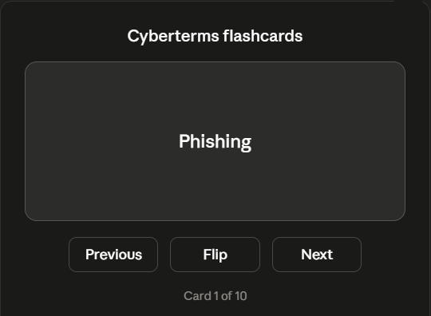
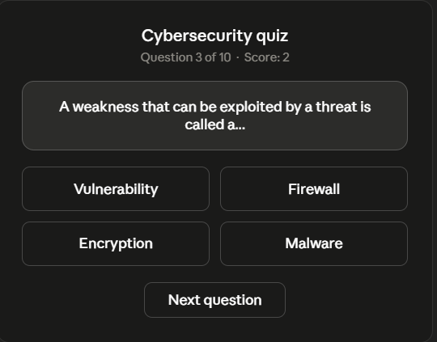

Overview
Purpose
This web application helps users learn and self-test on ten essential cybersecurity terms through interactive flashcards and a quiz. The purpose is to make studying cybersecurity vocabulary quick, engaging, and repeatable.
Audience
The intended audience is students, IT beginners, or anyone preparing for a security certification or class who wants a fast, no-frills way to review key terms and check their understanding.
Dynamic elements
JavaScript will drive the core interactivity. An array of objects will store each term with its definition (e.g. {term: "Phishing", definition: "The act of attempting to acquire sensitive information by disguising as a trustworthy entity in an electronic communication"}). On the flashcard page, JavaScript will randomly select or cycle through cards, and a click/tap event will flip the card between the term and its definition using a CSS class toggle. On the quiz page, JavaScript will generate multiple-choice questions dynamically from the same data array, shuffle answer order, track the user's score in a variable, and display real-time feedback (correct/incorrect) after each answer using DOM manipulation. A final results message will display the score out of 10 once the quiz is complete, and localStorage may be used to save the user's best score between visits.
Branding
Website Logo
Style Guide
Color Palette
Palette URL: https://coolors.co/ada8b6-ffeedb-4c3b4d-a53860-61c9a8| Primary | Secondary | Accent 1 | Accent 2 |
|---|---|---|---|
| [#FFEEDB] | [#4C3B4D] | [#A53860] | [#61C9A8] |
Pseudocode for your project
DEFINE array of 10 term objects: { term, definition } --- FLASHCARDS PAGE --- SET currentIndex = 0 DISPLAY term at currentIndex ON click "Flip" button: TOGGLE display between term and definition ON click "Next" button: INCREMENT currentIndex (loop back to 0 if at end) RESET card to show term (not definition) DISPLAY new term ON click "Previous" button: DECREMENT currentIndex (loop to last if at 0) DISPLAY term --- QUIZ PAGE --- SET score = 0 SET questionIndex = 0 SHUFFLE array of terms FUNCTION loadQuestion(questionIndex): GET term object at questionIndex DISPLAY definition as the question GENERATE 4 answer choices (1 correct term + 3 random distractors) SHUFFLE choices DISPLAY choices as clickable buttons ON click an answer choice: IF choice == correct term: score = score + 1 SHOW "Correct!" feedback ELSE: SHOW "Incorrect. The answer was ___" feedback DISABLE further clicks on this question SHOW "Next Question" button ON click "Next Question": questionIndex = questionIndex + 1 IF questionIndex 10: loadQuestion(questionIndex) ELSE: DISPLAY final score (score / 10) IF score > storedBestScore in localStorage: UPDATE localStorage bestScore DISPLAY "New personal best!" if applicable
Wireframes
Create wireframes for your project page(s). One for each page and list them here.
Page 1: Flashcards

Page 2: Quiz

Landing page
home page will have 2 buttons, one for the flashcards and one for the quiz. The user will click on either button to go to the respective page.
[Page 2 if needed]
[Any additional details about page 2 that the wireframe does not make clear]